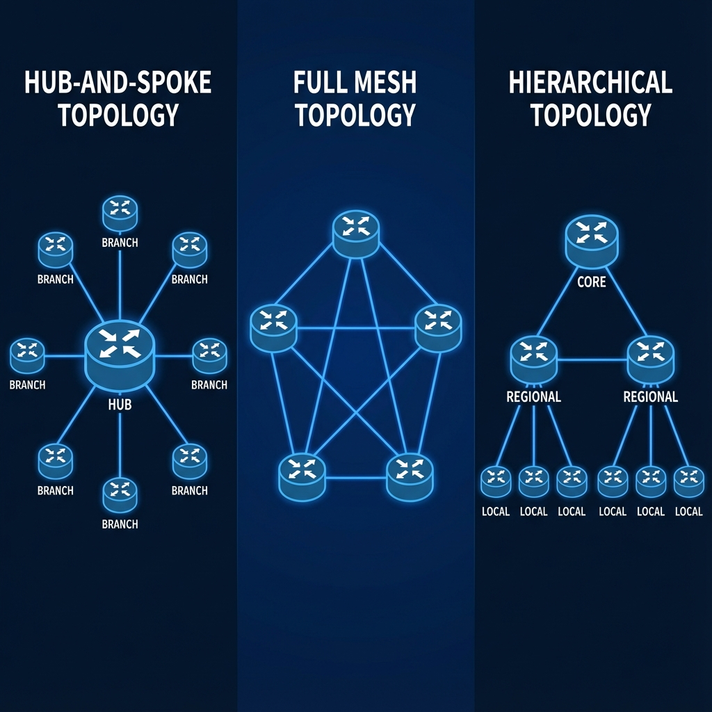

Chapter 5
Cisco Catalyst SD-WAN Design and Migration
Learning Objectives
- Memahami SD-WAN topology design considerations
- Mengidentifikasi site types dan requirements
- Merencanakan controller placement dan sizing
- Menjalankan migration strategy dari legacy WAN

Gambar 5.1 - Tipe-tipe topologi SD-WAN: Hub-and-Spoke, Full Mesh, dan Hierarchical
Topology Design
Common Topologies:
Hub-and-Spoke
Traditional dengan centralized hub
Full Mesh
Direct connectivity antar sites
Partial Mesh
Selective direct connections
Hierarchical
Regional hubs dengan spokes
SD-WAN Advantage
SD-WAN dapat dengan mudah membentuk full mesh atau partial mesh tanpa konfigurasi manual per-tunnel.
Site Types
| Site Type | Characteristics | Typical Hardware |
|---|---|---|
| Data Center | High bandwidth, critical apps, dual-homed | Catalyst 8500, ASR 1000 |
| Regional Hub | Aggregation point, service insertion | Catalyst 8300 |
| Large Branch | 100+ users, multiple WAN links | Catalyst 8200 |
| Small Branch | <50 users, single/dual WAN | Catalyst 8200L, ISR 1100 |
| Home Office | 1-5 users, basic connectivity | ISR 1100, vEdge Cloud |
Controller Sizing
Controller Recommendations:
| Scale | vManage | vSmart | vBond |
|---|---|---|---|
| Small (<100 devices) | 1x (8 vCPU, 32GB) | 2x (4 vCPU, 8GB) | 2x (2 vCPU, 4GB) |
| Medium (100-1000) | 3x Cluster (16 vCPU, 64GB) | 2x (8 vCPU, 16GB) | 2x (4 vCPU, 8GB) |
| Large (1000+) | 6x Cluster (32 vCPU, 128GB) | 4x (16 vCPU, 32GB) | 4x (8 vCPU, 16GB) |
Always Deploy Redundancy
Minimal 2 vSmart dan 2 vBond untuk production environments.
Migration Strategies
Migration Approaches:
🔄 Parallel Migration
- SD-WAN deployed alongside existing WAN
- Gradual traffic migration
- Easier rollback
- Higher cost during transition
🔁 In-Place Migration
- Replace existing routers with SD-WAN devices
- Site-by-site cutover
- Lower cost
- Higher risk per site
📍 Phased Approach
- Start with non-critical sites
- Build expertise gradually
- Migrate critical sites last
- Recommended for most enterprises